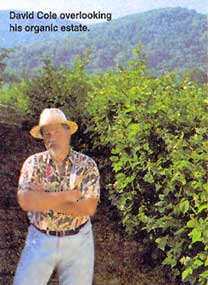

M ove over, Old MacDonald: a new era of farming has dawned. Organic farming practices are going high-tech and getting organized - at least, that's the case in Rappahannock County, Virginia.
In 1995, David Cole, a former president of America Online (AOL), purchased 300-year old Sunnyside Farm. He is determined to refine his farming techniques by blending state-of-the-art technology with organic methods, and plans to turn his agricultural endeavor into an expansive money-making en terprise. Ideas he is currently testing include a mobile chicken unit and a barn design that allows for the indoor rotation of livestock.
Cole believes that his work at AOL was crucial to the success of the enterprise. "My work in high-tech has taught me the importance of teamwork in building highly competitive enterprises. For me network farming is really a software business where know-how and !ow turnover are the k eys to success."
"Network farming" is a catch phrase for the cooperation of "spoke" and "hub" farms. Sunnyside serves as the hub farm, which teaches methods of organic farming, handles certification, and deals with marketing and customer relations. The spoke farms, in turn, specialize in certain crops in accordance with an annual production plan.
Sunnyside currently has four spoke farms in Rappahannock County. Cole plans to accumulate between eight and 12 farms in the region by 2004, with sustainable levels of operation in fruit, vegetables, flowers, herbs, poultry and beef. Upon accomplishing his mission, Cole will try to replicate this model elsewhere.
Despite the clever marketing and innovative farm techniques, not everyone is enamored with Sunnyside. Some critics say that people just can't treat the earth like big business. John Burns, a former consultant of Cole's, stated in a New York Times interview that Cole was brilliant, but wanted to do too much too fast.
Cole acknowledges that the success of his operation hinges on some factors outside his control. "The plain truth is that Mother Nature makes all the big decisions, and we are all relegated to optimizing on the margin," he says.
- DevonMadison
|
 |
|
|